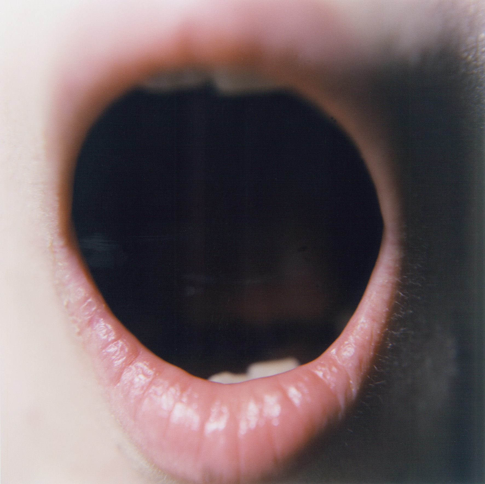

RINKO KAWAUCHI
JAPANESE PHOTOGRAPHER

Featured Works
Utatane, 2001
Artist Info at PRISKA PASQUER

Aila, 2004
Exhibition at PRISKA PASQUER, CologneIlluminance, 2009
Exhibition at FOMU, Antwerp“Just when it seems that everything has been photographed, in every possible way, along comes a photographer whose work is so original that the medium is renewed. Such a photographer is Rinko Kawauchi, who makes simple, lyrical pictures, so fresh and unusual that they are difficult to describe or classify. Her images document everyday things, yet could not be described as documentary. They are generally light in tone, yet somehow dark in mood. They are almost hallucinatory, yet seem to capture something fundamental about the psychological mood of modern life.”